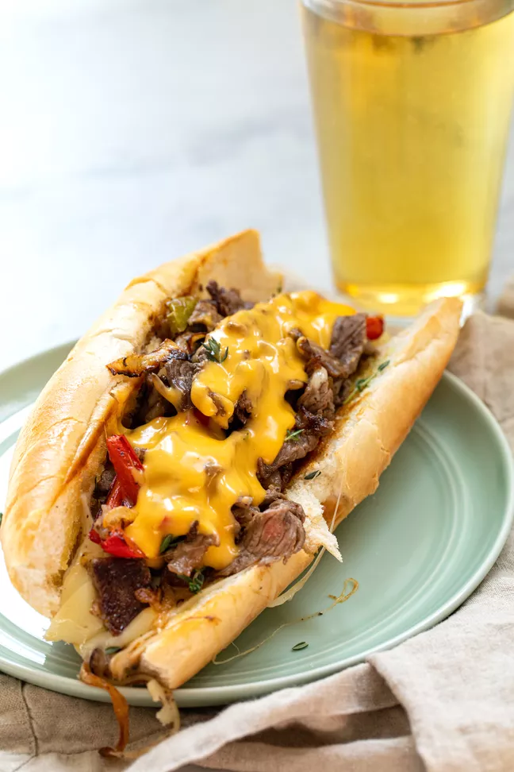

Philly Cheesesteak

Ingredients
- 10 to 12 ounce ribeye steak
- 1/2 teaspoon kosher salt
- 1/2 teaspoon black pepper
- 2 tablespoons olive oil
- 1/2 medium sweet onion
- 1/2 green bell pepper
- 1/2 red bell pepper
- 2 ounces provolone
- 2 hoagie rolls
- 1/4 cup of cheez whiz, warmed
Steps
- Place steak in freezer for about 10 minutes, cold but not frozen. Trim off any large pieces of fat and thinly slice the steak as much as possible with a sharp knife
- In a large skiller ser over medium heat, add 1 tablespoon of olive oil along with the sliced onions and peppers. Season with 1/4 teaspoon salt and pepper. Cook, stir occasionally, until the onions and peppers have softened and started to caramelize around the edges.
- Heat a griddle or large skiller over medium-high heat. Add the olive oil and wait for it to heat then the sliced steak. Spread out the steak in the skillen in a thin even layer so it covers as much surface area as possible. Cook for a minute or two and then stir to finish cooking the steak
- Turn heat down to low on the steak and add the peppers and onions to the steak mixture and stir to combine. Add the provolone to the top of the steak and let the cheese melt.
- Evenly scoop the cheesesteak mixture into the toasted hoagie rolls. THen drizzle the cheesesteak with cheez whiz.